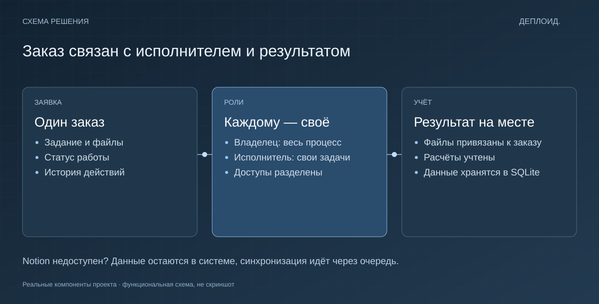

Разделение доступа
Исполнитель работает со своими задачами. Общая картина заказов и расчётов остаётся у владельца.
Telegram-бот · Автоматизация
Когда заказы живут в переписке, приходится помнить всё самому. Я собрал бота, в котором видно, кто взял задачу, на каком она этапе и где лежит результат.

Задача
Заказы, файлы и расчёты были разбросаны по сообщениям. Нужен был один порядок работы для владельца и исполнителей.
Решение
У каждого заказа появились статус, исполнитель и история. У владельца — общая картина и учёт расчётов. У исполнителя — его задачи и понятный следующий шаг.
Почему сделано именно так
Исполнитель работает со своими задачами. Общая картина заказов и расчётов остаётся у владельца.
Внутренний учёт не зависит от доступности Notion. Для синхронизации используется очередь.
Если не задана ставка, система сообщает об этом. Отсутствующие данные не превращаются в нулевое начисление.
Учёт хранится в SQLite. Данные для Notion уходят через очередь: недоступность внешнего сервиса не останавливает работу бота. Доступы разделены по ролям, а отсутствие ставки вызывает явную ошибку — расчёт не превращается незаметно в ноль.

Собственный рабочий проект. Telegram, Python, SQLite, Notion. Обложка — иллюстрация идеи проекта. Функциональная схема находится в технических подробностях. Код и рабочие данные не публикуются.